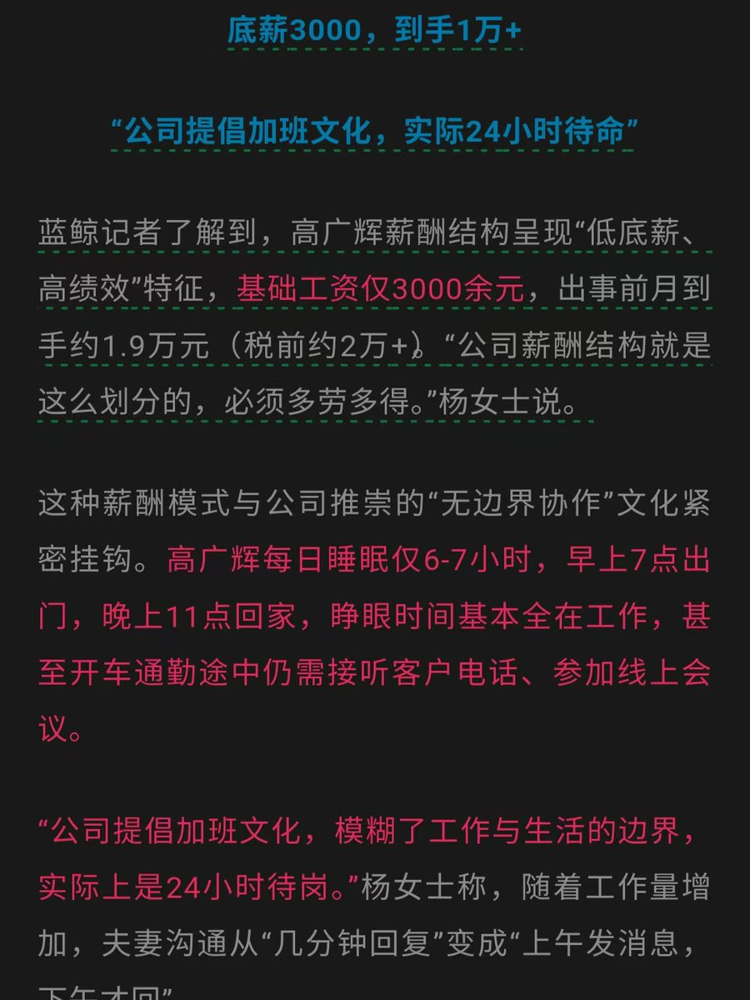

奶昔🥤
@realNyarime
@_miju_9 我刚刚也发了一条他女朋友的聊天记录……心寒、唏嘘
本身为了家庭，对工作一丝不敢怠慢
而且收入大部分都是加班换来的
如果这些地主，选择把牛马当人看，那就不需要劳动法、也没有劳动仲裁这种破事了。
何必呢……怕成为下一个他

Miju咪啾
@_miju_9
猝死程序员高广辉的底薪只有3000，这种公司的薪资结构其实是和富士康一样的
靠基础工资根本就养不活自己，看着每个月拿的工资很高，实际上都是加班赚来的
况且高广辉还是结了婚的，压力大，担子重
人一旦有了家庭，干这种工作的时候心里就会有一个念头：那就是再多干会，再多挣点 https://t.co/CP585eHi5N